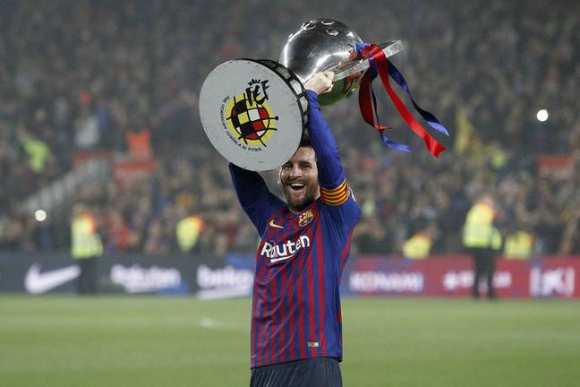

The Goat
Lionel Messi
Information
- Full Name: Lionel Andrés Messi
- Born: June 24, 1987 (age 33 years)
- Salary: 26 million GBP/ 35 million USD(2020)
Why are they called the GOAT?
- The first team he played for is Barcelona
- Messi holds the records for most goals in La Liga (447)
- Most hat-tricks in La Liga (36)
- The History of Barcelona
He has scored 117 goals in Barcelona. He has also set a record for scoring in 16 consecutive Champions League seasons.
This is one of the top team that he played in during the league season.
A hat-trick is when a player score 3 goals in a single game. The team also made it to the UEFA Champions League.
La Liga, the top Spanish football league, was formed in 1929, and Barcelona captured the title in the league’s inaugural season. The club has won La Liga 26 times and has never been relegated to a lower division.